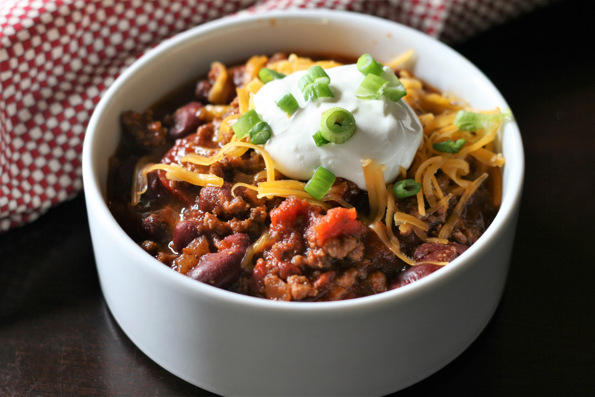

Chili

- 3 lb ground beef
- 4 cans kidney beans
- 2 onions
- 2 large green peppers
- 1 head celery
- 2 cans crushed tomatoes with juice
- 1/4 cup chili powder
- 1 tbsp cumin
- Cooking oil
- Chop onions, green peppers, and celery
- Heat oil in a dutch oven on the stovetop
- Add chopped vegetables and cook until lightly browned
- Remove chopped vegetables
- Brown ground beef
- Add back in cooked vegetables, canned tomatoes, and drained and rinsed kidney beans
- Add cumin, chili powder, and one kidney bean can full of water
- Stir well and bring to a simmer
- Simmer, covered, for 90 minutes, stirring occasionally